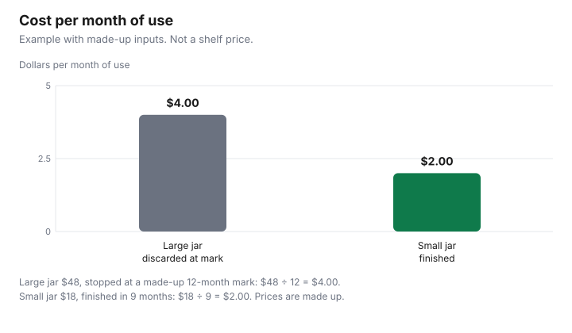

Personal Care · Canada
Makeup and Toiletry Expiry: PAO Symbols, Shelf Life and Buying Less

In Canada, Health Canada does not require an expiry date on most cosmetics, so the open-jar number is the maker’s own mark. Sunscreens are different: Health Canada says all sunscreens have expiry dates. Buy only what you will finish, and stop using a product that changes in smell, colour or feel. A product you throw out is a purchase you already made. The saving is not the biggest jar on the shelf. It is the jar you finish while it is still fit to use. This page is the buy-what-you-finish method for makeup and ordinary toiletries in Canada: what an open-jar mark is, what Health Canada actually requires on a cosmetic label, and why sunscreen follows a different rule. It does not rank a brand, and it does not assign a number of months to mascara, foundation, or a cream. Those intervals are dropped unless a page cited here states them. Nothing here is medical advice.
Key takeaways
- Health Canada’s labelling pages, as of 29 Sep 2026, require an ingredient list, a bilingual product identity, a metric net quantity, dealer contact details, warnings, and safe-use directions. An expiry date and an open-jar mark are not on that list.
- The Cosmetic Regulations, current to 2026-09-21 and last amended on 2026-04-12, do not use the word expiry. A number beside an open jar is the maker’s own mark, not a figure this guide can turn into a Canadian legal shelf life.
- Health Canada says all sunscreens have expiry dates, and that an expired sunscreen may be less effective. An adult amount on that page is about 7 teaspoons (35 mL).
- Stop using a cosmetic that changes in smell, colour, or feel. For eyes: wash your hands, do not share, and do not moisten mascara with saliva.
- The chart is an example with made-up inputs. A $48 jar stopped at 12 months is $4.00 a month. An $18 jar finished in 9 months is $2.00 a month.
Period-after-opening symbols
Some jars show a small open pot and a figure such as 6M or 12M. Shoppers often call that the period-after-opening symbol, or the open-jar symbol.
Health Canada’s consumer labelling page, as of 29 Sep 2026, and the industry guide to cosmetic labelling on the same site, do not define that symbol and do not tell a company to print it. The mandatory list is different. A cosmetic label must show the ingredient list in International Nomenclature of Cosmetic Ingredients names, the identity of the product in English and French, the net quantity in metric units, contact information for questions, the identity and principal place of business of the dealer, warnings or cautions in English and French, and directions for safe use in English and French. The advertising and labelling page states the same mandatory set, and it adds that the ingredient list itself does not have to be bilingual because INCI names are the required form.
That gap matters for the shopping decision. You cannot treat “12M” as a Health Canada rule this page can quote, because no such rule appears in the labelling pages or in the Cosmetic Regulations text as of the same date. You can treat it as the instruction printed on that package. Write the date you opened the jar next to the mark, and plan to finish or discard by the date that mark implies on that jar. If the jar has no mark and no expiry date, you do not invent one. You use the change-in-smell test below, and you buy a size you are likely to finish. A gift set full of minis you will not open is the problem described on the advent calendar and gift-set guide.
| Mark | What the cited pages say | What you do |
|---|---|---|
| Open jar with a number and M | Not on Health Canada’s must-include list. Not defined in the Cosmetic Regulations text as of 29 Sep 2026. | Read it as the maker’s instruction on that package. Date the day you open it. |
| Expiry date on a cosmetic | Not on the must-include list for cosmetics. | If one is printed, follow it. If none is printed, do not invent a month count. |
| Expiry date on sunscreen | Health Canada: all sunscreens have expiry dates. An expired sunscreen may be less effective. | Check the date. Do not keep using a bottle past it because product remains. |
| DIN or NPN | A therapeutic claim belongs on a drug or a natural health product, which carries an eight-digit number. Ordinary cosmetics do not. | Search a DIN in the Drug Product Database or an NPN in the Licensed Natural Health Products Database, and read the status. |
| Ingredient list | Required, in INCI names, on the outer label where the regulations apply. | Compare lists when you switch a product. A shorter list is not, by itself, a longer life. |
Sunscreen expiry
Sunscreen is not filed as an ordinary cosmetic. Health Canada’s sunscreens page says sunscreens are regulated under the Food and Drugs Act and its regulations, and that every sunscreen approved for sale in Canada must have a drug identification number or a natural product number.
Chemical filters such as avobenzone, homosalate, octocrylene, octisalate, octinoxate, and oxybenzone mean an eight-digit DIN. Zinc oxide or titanium dioxide alone means an eight-digit NPN. A bottle with both kinds of filter has a DIN. The same page has a heading for expiry: all sunscreens have expiry dates, and an expired sunscreen may be less effective. That is the rule to shop with. The sunscreen guide is where the price-per-millilitre arithmetic sits. This page only needs the date.
Use the date together with the amount, or a large bottle still looks cheap while it expires half full. Health Canada says an adult should use about 7 teaspoons (35 mL) to cover exposed skin: about one teaspoon for each arm, each leg, the front, the back, and the face and neck. Apply it generously and evenly at least 15 minutes before you go out, and reapply at least every 2 hours, and after swimming, sweating, or towelling off. A water-resistant or sport label still needs that reapplication. Using less than the recommended amount greatly reduces protection, which is also how a family overestimates how long a bottle will last. Store the bottle out of direct sunlight and out of a hot car. Extreme heat can make a sunscreen less effective even before the printed date. Lip balm with SPF is part of the same advice. Babies under six months are a question for a health care provider, in Health Canada’s words, not a bottle size to guess.
Signs a product's gone off
Health Canada’s “use cosmetics safely” page gives the household test that does not depend on a month count. Most cosmetics contain preservatives so bacteria are less likely to grow.
Wash your hands before you apply makeup. Do not share makeup. Do not add water or saliva to dilute it. Keep cosmetics in a dry area, away from direct heat and sunlight. Do not use a cosmetic if it changes in smell, colour, or feel. The advertising page adds why the bathroom is a poor cupboard: people store products where it is warm and damp, and a wand or a finger can carry microorganisms back into the pot. Preservative-free, on that page, means preservatives were not added. It does not mean the product is indifferent to heat and moisture.
Eyes have a stricter page of their own. Eye cosmetics must meet the same safety and clean-manufacturing requirements as other cosmetics, and contamination can pull a product from sale until the manufacturer fixes it. After you buy it, the handling is yours. Health Canada says infection of eye tissue can have very serious consequences, possibly even blindness. Wash your hands. Never use saliva to moisten mascara or other eye makeup. Never borrow or share eye makeup. Stop immediately if a product causes irritation or inflammation. Those are the signs this guide will state. A separation, a smell, or a colour you did not buy is the general cosmetic test. Irritation is the stop-now test. This is not a diagnosis, and it is not a licence to keep using a product that bothers you because the jar has months left on a maker’s mark.
Buying sizes you'll finish
Price per month of use is the price divided by the months you will actually use the product. Months you will not use, because you discarded the jar at the maker’s mark or because you disliked it, stay in the numerator and drop out of the denominator.
That is the whole method. A warehouse size fails the test when the open-jar mark, the sunscreen expiry date, or a change in smell arrives while product is left. The Costco personal-care guide is the bulk version of the same question. The store-brand toiletries guide is the ingredient-list comparison once you have chosen a size you will finish.
Example with made-up inputs, not shelf prices. A large jar costs $48. The made-up open-jar mark on that jar is 12 months, and the example stops at that mark even if cream remains. Cost per month of use is $48 ÷ 12, which is $4.00. A small jar costs $18 and is finished in 9 months, with nothing left to throw out. Cost per month is $18 ÷ 9, which is $2.00. The large jar was the bigger package and the more expensive month. Replace both prices with the tags in front of you, and replace 12 and 9 with the mark on your jar and the pace you actually keep. If you have no mark, do not borrow 12. Count the months you have historically finished a jar of that product, or buy the smaller size until you know.
| Product | Clock you can cite | Buy-less rule |
|---|---|---|
| Eye makeup | Stop if it irritates. Do not share. Do not add saliva. No month count cited here. | Smallest tube you will finish. One user. |
| Cream or liquid makeup | Maker’s open-jar mark if printed. Otherwise smell, colour, and feel. | Price ÷ months you will use. Leftover at the mark is waste. |
| Sunscreen | Expiry date on the bottle. About 35 mL for an adult full application. | Count applications you will make before the date. Do not stock past it. |
| Cleanser, shampoo, body wash | No month count cited here. Metric size is required on a cosmetic label. | Price per 100 mL, then only the millilitres you will finish. See the short routine. |
Storage
Storage is the other half of the size decision. Health Canada’s safety page says to keep cosmetics dry and away from direct heat and sunlight.
The advertising page explains that a warm, damp bathroom is a place microorganisms can grow, which is why preservatives are in most products and why a preservative-free claim is not a storage plan. A wand that goes back into a tube, or a finger in a jar, is the contamination path that page describes. Close the lid. Do not top up an old bottle with water to “make it last.” Do not combine two half-used jars to save a shelf. Those habits fight the preservative system the label assumed.
Sunscreen has its own storage line: not in direct sunlight, and not in a place that gets very hot, such as a car. A beach bag left on a deck is the same kind of heat. Bring the bottle inside, and check the expiry date at the start of the season rather than on the afternoon you need it. For a cosmetic with an open-jar mark, the start of the clock is the day you open it, not the day you bought it. A backup jar in a cupboard is fine until you open it. Three open jars in the bathroom are three clocks running. Keep one open, and let the three-step routine limit how many clocks you start.

Sources
- Health Canada, Labelling of cosmetics, as of 29 Sep 2026. Page details 2025-11-04. Must-include list: INCI ingredients, bilingual identity, metric net quantity, dealer contact, warnings, and safe-use directions. Governed by the Food and Drugs Act, the Cosmetic Regulations, and the Consumer Packaging and Labelling Act and Regulations.
- Health Canada, Cosmetic advertising, labelling and ingredients, as of 29 Sep 2026. Same mandatory list. Claims must be accurate and not misleading. Therapeutic claims need a DIN or an NPN. Preservative-free, hypoallergenic, and the warm damp bathroom note.
- Health Canada, Use cosmetics safely, as of 29 Sep 2026. Do not use a cosmetic that changes in smell, colour, or feel. Dry storage, away from direct heat and sunlight. Do not add water or saliva. Do not share makeup.
- Health Canada, Eye cosmetics, as of 29 Sep 2026. Page details 2016-12-05. Wash hands, never share, never moisten with saliva, stop if irritation or inflammation.
- Health Canada, Sunscreens, as of 29 Sep 2026. All sunscreens have expiry dates. Heat warning. About 7 teaspoons (35 mL) for an adult. DIN and NPN rules. Broad-spectrum SPF 30 or higher.
- Cosmetic Regulations, C.R.C., c. 869, Justice Laws, as of 29 Sep 2026. Current to 2026-09-21, last amended on 2026-04-12. The word expiry does not appear. Ingredient list in INCI names is required on the outer label.
- Health Canada, Drug Product Database and Licensed Natural Health Products Database search pages, as of 29 Sep 2026. Search by DIN or by NPN, and read status.
Frequently asked questions
What does the open-jar symbol mean?
It is the period-after-opening mark some makers print on a jar, often an open jar with a number and the letter M. Health Canada’s labelling pages, as of 29 Sep 2026, do not list that mark among the items a cosmetic label must show. The Cosmetic Regulations, current to 2026-09-21, do not use the word expiry. Treat the number on your own package as the maker’s instruction, and stop if the product changes in smell, colour, or feel.
Do cosmetics in Canada have to show an expiry date?
Health Canada’s labelling page says a cosmetic label must include an INCI ingredient list, the product identity in English and French, a metric net quantity, the dealer’s identity and a place to send questions, warnings or cautions, and directions for safe use. An expiry date is not on that must-include list. Sunscreen is a different product: Health Canada says all sunscreens have expiry dates. Read the bottle in your hand rather than a general rule for every cream.
Does sunscreen expire?
Yes. Health Canada’s sunscreens page says all sunscreens have expiry dates, an expired sunscreen may be less effective, and you should check the date before you rely on the bottle. The same page says to avoid direct sunlight and hot places such as a car, because extreme heat can also make a sunscreen less effective. This is not medical advice.
Is expired makeup unsafe?
Health Canada’s eye-cosmetics page says infection of eye tissue can be serious, possibly even blindness, and it tells you to wash your hands, never share eye makeup, never moisten mascara with saliva, and stop at the first irritation. The cosmetics-safety page says not to use a cosmetic that changes in smell, colour, or feel. This guide does not cite a number of months after which mascara becomes unsafe. If a product bothers your eyes or skin, stop and speak to a health care provider.
How can I avoid wasting products?
Buy the size you will finish, and write the open date on the jar so the maker’s mark has a start. Divide the price by the months you will actually use, and compare that with a smaller size using the same division. A club bottle is cheaper per month only when you finish it. Gift sets and advent calendars are a separate waste problem, covered on the gift-set guide.
Researched and drafted with AI assistance and fact-checked against official Canadian sources. How we create content.